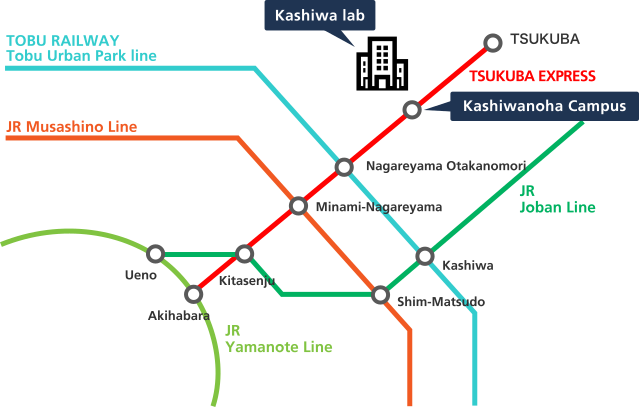

Kashiwa lab.
MorePeripheral map
〒277-0871
Univ. of Tokyo Kashiwa-no-ha Campus Station Satellite 6F.
178-4-4 Wakashiba, Kashiwa-shi, Chiba 277-0871, JAPAN
TEL +81-4-7135-5508
FAX +81-4-7135-5534
Train Terminal at Kashiwanoha Campus Station

| Departure station | Duration |
|---|---|
| Tsukuba Express Akihabara Station | about 30 minutes |
| Tsukuba Express Tsukuba Station | about 20 minutes |
| Tsukuba Express Kita-Senju Station | about 20 minutes |
Bus Terminal at Kashiwanoha Campus Station
| Bus terminal | Platform number | Destination | Duration | Schedule |
|---|---|---|---|---|
| Kashiwa Station West | Kashiwa09 | Kashiwanoha Campus Station East |
about 23 minutes | |
| Kashiwa Station West | Nishi-Kashiwa02 | Kashiwanoha Campus Station West |
about 23 minutes | |
| Nagareyamaootakanomori Station East | Nishi-Kashiwa03 | Kashiwanoha Campus Station East |
about 36 minutes | |
| Edogawadai Station East | Nishi-Kashiwa04 Nishi-Kashiwa10 |
Kashiwanoha Campus Station West |
about 25 minutes |
Access from the Narita Airport
| Bus terminal | Departure time | ||||||||||||
|---|---|---|---|---|---|---|---|---|---|---|---|---|---|
| International Terminal | 8:25 | 10:45 | 11:50 | 14:15 | 15:15 | 16:15 | 17:15 | 18:15 | 19:15 | 19:55 | 20:30 | 21:15 | 22:15 |
| Terminal 2 | 8:35 | 10:55 | 12:00 | 14:25 | 15:25 | 16:25 | 17:25 | 18:25 | 19:25 | 20:05 | 20:40 | 21:25 | 22:25 |
| Terminal 1 | 8:40 | 11:00 | 12:05 | 14:30 | 15:30 | 16:30 | 17:30 | 18:30 | 19:30 | 20:10 | 20:45 | 21:30 | 22:30 |
| Bus terminal | Departure time | ||||||||
|---|---|---|---|---|---|---|---|---|---|
| International Terminal | 5:07 | 5:57 | 6:57 | 8:04 | 9:04 | 10:54 | 12:01 | 15:01 | 16:01 |
Mishima lab.
MorePeripheral map
〒411-8540
National Institute of Genetics Yata 1111, Mishima, Shizuoka 411-8540, JAPAN